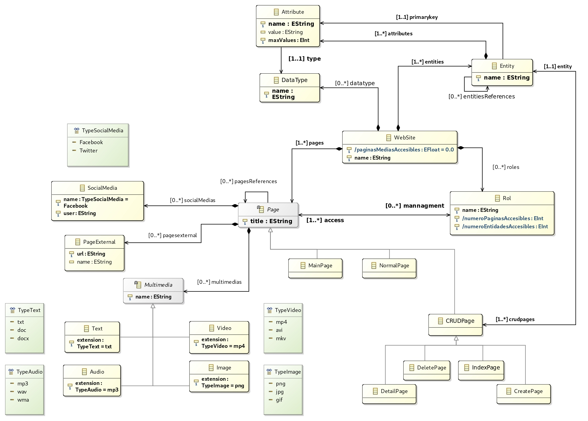

Authors : Pedro Miguel Carmona Broncano & Rubén Marín Lucas
Last updated : 28/05/2021

Name : dataWebDeskDSL
NS Prefix : dataWebDeskDSL
NS URI : http://www.example.org/dataWebDeskDSL
EClass : Rol
Description : Permite diferenciar los distintos tipos de usuarios de la aplicación. Cada rol debe definir de forma obligatoria el atributo name. Además debe tener acceso de 1 a más páginas
- (1...1) name : EString
- (1...1) numeroPaginasAccesibles : EInt (derived) = if (self.access ->oclIsUndefined()) then 0
else self.access -> size()
endif
- (1...1) numeroEntidadesAccesibles : EInt (derived) = if (self.access->selectByKind(CRUDPage).entity->oclIsUndefined()) then 0
else self.access->selectByKind(CRUDPage).entity->asSet() -> size()
endif
- (1...*) mannagment#access : Page
EClass : NormalPage extends Page
Description : Páginas de tipo normal representadas en el modelo.
- (0...*) pagesReferences : Page
- (0...*) socialMedias : SocialMedia (Composition)
- (0...*) access#mannagment : Rol
- (0...*) pagesexternal : PageExternal (Composition)
- (0...*) multimedias : Multimedia (Composition)
EClass : CreatePage extends CRUDPage
Description : Páginas de tipo create representadas en el modelo.
- (0...*) pagesReferences : Page
- (0...*) socialMedias : SocialMedia (Composition)
- (0...*) access#mannagment : Rol
- (0...*) pagesexternal : PageExternal (Composition)
- (0...*) multimedias : Multimedia (Composition)
- (1...1) crudpages#entity : Entity
EClass : MainPage extends Page
Description : Páginas de tipo main representadas en el modelo.
- (0...*) pagesReferences : Page
- (0...*) socialMedias : SocialMedia (Composition)
- (0...*) access#mannagment : Rol
- (0...*) pagesexternal : PageExternal (Composition)
- (0...*) multimedias : Multimedia (Composition)
EClass : DetailPage extends CRUDPage
Description : Páginas de tipo detail representadas en el modelo.
- (0...*) pagesReferences : Page
- (0...*) socialMedias : SocialMedia (Composition)
- (0...*) access#mannagment : Rol
- (0...*) pagesexternal : PageExternal (Composition)
- (0...*) multimedias : Multimedia (Composition)
- (1...1) crudpages#entity : Entity
EClass : DeletePage extends CRUDPage
Description : Páginas de tipo delete representadas en el modelo.
- (0...*) pagesReferences : Page
- (0...*) socialMedias : SocialMedia (Composition)
- (0...*) access#mannagment : Rol
- (0...*) pagesexternal : PageExternal (Composition)
- (0...*) multimedias : Multimedia (Composition)
- (1...1) crudpages#entity : Entity
EClass : CRUDPage extends Page
Description : Páginas de tipo CRUD representadas en el modelo. Está relacionado con alguna entidad (Entity). Es superclase de DetailPage, DeletePage, IndexPage y CreatePage.
- (1...1) crudpages#entity : Entity
- (0...*) pagesReferences : Page
- (0...*) socialMedias : SocialMedia (Composition)
- (0...*) access#mannagment : Rol
- (0...*) pagesexternal : PageExternal (Composition)
- (0...*) multimedias : Multimedia (Composition)
EClass : IndexPage extends CRUDPage
Description : Páginas de tipo index representadas en el modelo.
- (0...*) pagesReferences : Page
- (0...*) socialMedias : SocialMedia (Composition)
- (0...*) access#mannagment : Rol
- (0...*) pagesexternal : PageExternal (Composition)
- (0...*) multimedias : Multimedia (Composition)
- (1...1) crudpages#entity : Entity
EClass : Page (abstracta)
Description : Paginas representadas en el modelo. Cada página está compuesta de calquier número de redes sociales (SocialMedia), páginas externas (PageExternal) y archivos multimedia (Multimedia). Además debe definir el atributo name y puede tener cualquier número de referencias a otras páginas o a ella misma. Es superclase abstracta de MainPage, NormalPage y CRUDPage
- (0...*) pagesReferences : Page
- (0...*) socialMedias : SocialMedia (Composition)
- (0...*) access#mannagment : Rol
- (0...*) pagesexternal : PageExternal (Composition)
- (0...*) multimedias : Multimedia (Composition)
EClass : SocialMedia
Description : Redes sociales modeladas en el sistema. De forma obligatoria debe definir los atributos user y name.
- (1...1) name : TypeSocialMedia
- (1...1) user : EString
EClass : WebSite
Description : Sitio web representado en el modelo. Está compuesto por una o varias entidades (Entity), por una o varias páginas (Page) y por cualquier número de páginas (Page), roles (Roles) y tipos de dato (DataType). Define de forma obligatoria el atributo name.
- (1...1) paginasMediasAccesibles : EFloat (derived) = if (self.roles->size() = 0) then 0
else (self.roles.numeroPaginasAccesibles -> sum() / self.roles -> size())
endif
- (1...1) name : EString
- (1...*) pages : Page (Composition)
- (0...*) roles : Rol (Composition)
- (1...*) entities : Entity (Composition)
- (0...*) datatype : DataType (Composition)
- invariant one_sm : pages.socialMedias -> size() >= 1
- invariant one_home : pages->selectByType(MainPage)->select(mannagment->size() = 0) -> size() = 1
- invariant no_pages_alone : self.roles.access->asSet()->size()+1 = self.pages->size()
EClass : Entity
Description : Represenata a los datos que pueden incluir las distintas páginas. Está relacionada con 1 o más páginas crud, además de referenciar a cualquier numero de entidades y tener un primary key. Debe definir de forma obligatoria un name. Cada entity está compuesta por uno o más atributos.
- (1...*) attributes : Attribute (Composition)
- (0...*) entitiesReferences : Entity
- (1...1) primarykey : Attribute
- (1...*) entity#crudpages : CRUDPage
- invariant no_myself : entitiesReferences->excludes(self)
- invariant no_other_references : entitiesReferences.entitiesReferences->excludes(self)
- invariant no_more_CRUD : crudpages->selectByType(CRUDPage)->size() = 1 implies crudpages->size() = 1
- invariant index_details_together :
((crudpages->selectByType(IndexPage)->size() = 1 implies crudpages->selectByType(DetailPage)->size() = 1)
and (crudpages->selectByType(DetailPage)->size() = 1 implies crudpages->selectByType(IndexPage)->size() = 1))
EClass : Attribute
Description : Permite definir los atributos de las entidades. Define de froma obligatoria los atributos name, value y maxvalues. Además está relacionado con un tipo (type)
- (1...1) name : EString
- (0...1) value : EString
- (1...1) maxValues : EInt
EClass : DataType
Description : Permite definir el tipo de datos de los atributos. Define de forma obligatoria el atributo name.
EClass : PageExternal
Description : Páginas externas modeladas en el sistema. De forma obligatoria debe definir los atributos url y name.
- (1...1) url : EString
- (0...1) name : EString
EClass : Multimedia (abstracta)
Description : Representa a los distintos datos que pueden contener las páginas. Define de forma obligatoria el atributo name. Es una superclase abstracta de Text, Video, Audio e Image
EClass : Text extends Multimedia
Description : Elemento de tipo texto representado en el modelo.
- (1...1) name : EString
- (1...1) extension : TypeText
EClass : Video extends Multimedia
Description : Elemento de tipo video representado en el modelo.
- (1...1) name : EString
- (1...1) extension : TypeVideo
EClass : Audio extends Multimedia
Description : Elemento de tipo audio representado en el modelo.
- (1...1) name : EString
- (1...1) extension : TypeAudio
EClass : Image extends Multimedia
Description : Elemento de tipo imagen representado en el modelo.
- (1...1) name : EString
- (1...1) extension : TypeImage
EEnum : TypeText
EEnum : TypeAudio
EEnum : TypeImage
EEnum : TypeVideo
EEnum : TypeSocialMedia